虚拟机实验环境使用指南¶
关于虚拟机实验环境
本实验环境基于 Ubuntu 虚拟机镜像（OVA 格式） 构建，已预装 XV6 开发所需的全部工具（编译器、调试器、QEMU 等）。
- 实验室同学（T2102/T2210/T2507/T2608） ：实验室电脑已提前导入虚拟机，直接跳过 “准备工作”“导入 OVA 文件”，从2. 启动虚拟机与登录开始操作即可；
- 个人电脑使用者 ：需按完整步骤下载镜像、导入虚拟机，确保本地磁盘至少有 20GB 可用空间。
1. 准备工作（仅个人电脑使用者需做）¶
1.1 虚拟化环境检查¶
⚠️ 必须开启 CPU 虚拟化！否则无法运行虚拟机
- 打开任务管理器 → 性能 → CPU
- 确认 虚拟化 显示 “已启用”
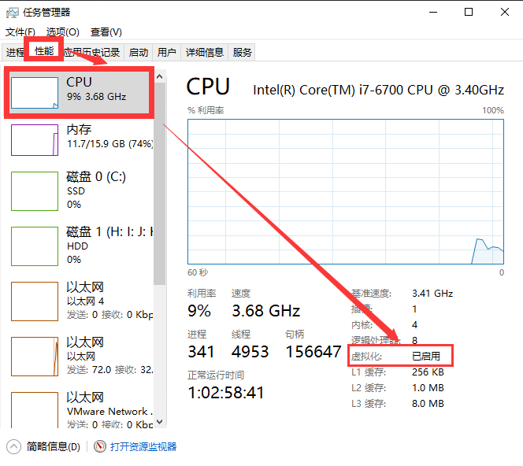
如果虚拟化是禁用，请自行开启CPU虚拟化。
1.2 手动开启 CPU 虚拟化（如未启用）¶
不同品牌电脑进入 BIOS 的按键不同，以下为通用步骤：
- 重启电脑，根据电脑品牌按对应按键进入 BIOS（常见按键：联想 / 惠普按
F1/F2，戴尔按F2/Del，华硕按Del，可开机时观察屏幕提示）； - 进入 BIOS 后，找到【高级菜单】→【CPU 菜单】（或 “Processor Configuration”）；
- 启用以下两项功能：
- “Intel Virtualization Technology”（Intel 芯片）或 “AMD-V”（AMD 芯片）设为 Enabled （打开）；
- “VT-d”（或 “Intel VT-d Technology”）设为 Enabled （打开）；
- 按
F10保存设置并重启电脑。
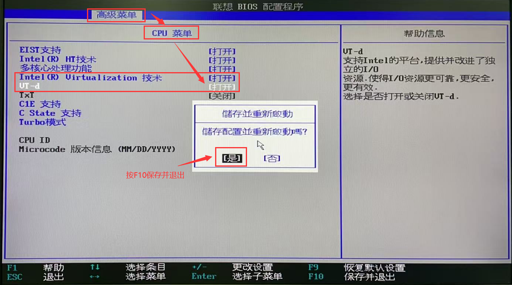
1.3 安装 VirtualBox 7.1.8¶
如果你的电脑已安装有VirtualBox，则无需重复安装。
- 下载 ：点这里下载实验工具
- 安装 ：运行安装程序，按向导完成安装（建议保持默认设置：勾选 “创建桌面快捷方式”“添加到 PATH”）。
1.4 下载 oslab实验环境文件¶
OVA 镜像约 6GB，已预装所有实验工具，无需额外配置。
- 下载 ：点这里下载实验工具
1.5 导入 OVA 文件¶
- 打开 VirtualBox 双击桌面上的 VirtualBox 图标或从开始菜单中找到并打开它。
- 导入 OVA 文件
- 点击菜单 管理 → 导入虚拟电脑 。
- 在“文件”栏，选择下载的 oslab2.ova 文件 → 点击 打开。
- 在“设置”栏，修改“默认虚拟电脑位置”的存储路径（关键！）：
- 点击 “默认虚拟电脑位置” 旁的文件夹图标 → 选择“其他” → 选择 D/E 盘 下的目录（如 D:\OSLab）。
- 确认配置无误 → 点击 导入，等待进度条完成。
⚠️ 重要提示
- 如果导入失败，检查磁盘空间（需至少 20GB 可用）和文件完整性（重新下载 OVA）。
2. 启动虚拟机与登录（所有人必做）¶
T2102 实验室使用虚拟机前请先配置 Host-only IP
只有在 T2102 实验室 使用预装虚拟机时需要执行本提示中的步骤；其他实验室和个人电脑使用者不需要修改。
在启动 oslab2 虚拟机之前，请先在 VirtualBox 中把 Host-only 网卡的 IPv4 地址改为 192.168.56.1：
- 打开 VirtualBox 后，先不要启动虚拟机；
- 点击左侧 工具 ，进入 仅主机(Host-Only)网络 页面；
- 选中
VirtualBox Host-Only Ethernet Adapter； - 选择 手动配置网卡 ，将 IPv4 地址 改为
192.168.56.1； - 点击右下角 应用 保存配置。

配置完成后，回到 VirtualBox 主界面，选中 oslab2 虚拟机，再点击 启动 。
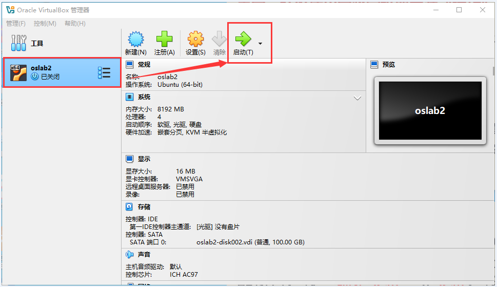
-
启动虚拟机
- 在 VirtualBox 主界面选中 oslab2 → 点击 启动。
- 首次启动：等待 1-2 分钟，系统会自动初始化。
-
登录 Ubuntu
- 用户名：
oslab - 密码：
123456
- 用户名：
2.1 获取虚拟机 IP 地址¶
为提升开发效率，建议通过 VSCode 远程连接虚拟机（支持图形化编辑、调试），需先获取虚拟机 IP 地址。
在虚拟机桌面右键，选择【Open in Terminal】（打开终端）。
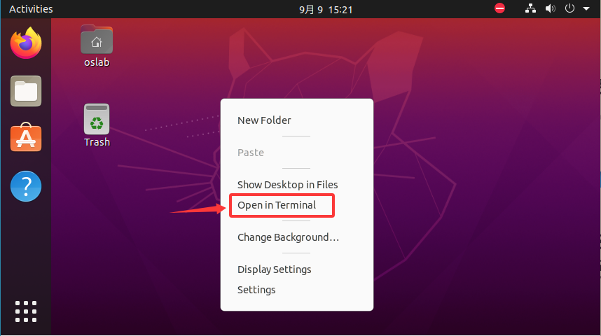
输入以下命令查看 IP：
ip addr
找到 192.168.56.xxx 格式的 IP 地址（示例：192.168.56.103），记录该地址（后续连接需使用）。
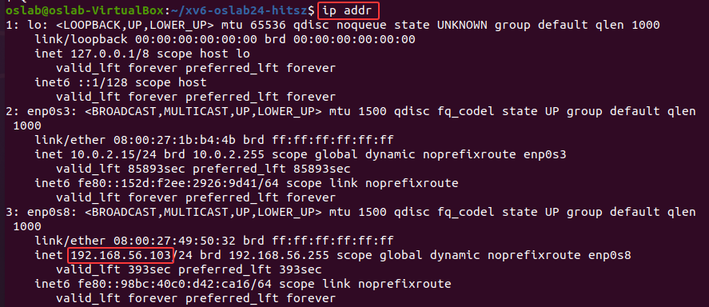
2.2 准备远程连接工具¶
需提前安装以下软件（均为免费工具）：
- 必装 ：Visual Studio Code（简称 VSCode，用于代码编辑和调试）；
- 推荐 ：MobaXterm（可选，用于 SSH 终端连接，比系统自带终端更易用）。
安装 VSCode（未安装时操作）：
- 访问 VSCode 官网：https://code.visualstudio.com/；
- 点击【Download for Windows】下载 Windows 版本安装包；
- 运行安装包，按向导完成安装（建议勾选 “添加到 PATH”“创建桌面快捷方式”）。
2.3 用 VSCode 远程连接虚拟机¶
2.3.1 安装 Remote-SSH 插件¶
- 启动 VSCode，点击左侧【扩展】图标（四方块图标）；
- 在搜索框输入 “Remote-SSH”，找到对应插件并点击【安装】；
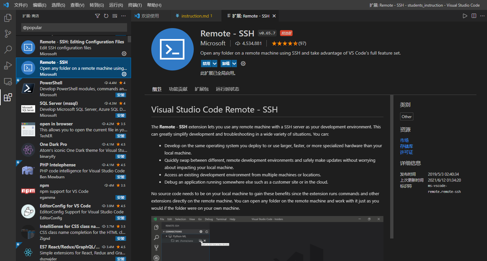
2.3.2 配置 SSH 连接¶
-
安装完成后，点击左侧【远程资源管理器】图标（类似 “显示器 + 箭头”）；
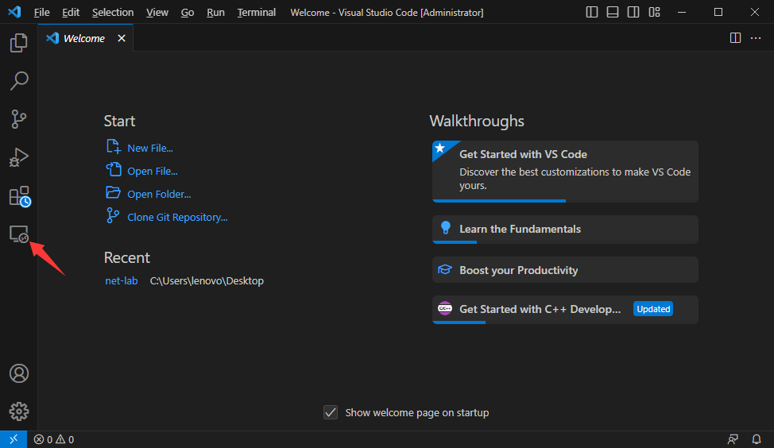
-
点击 SSH 右侧的 + 图标（添加新连接）。
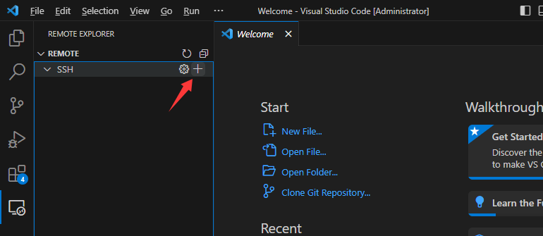
-
在弹出的命令框中输入 SSH 连接命令（替换为 2.1 中记录的 IP 地址）：
ssh oslab@192.168.56.103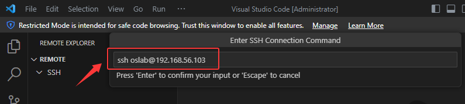
-
选择 SSH 配置文件保存路径（默认路径即可，通常为 C:\Users\用户名.ssh\config），点击 确定。
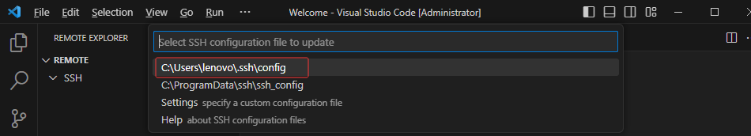
-
在远程资源管理器中，找到刚添加的连接（显示为
ssh oslab@192.168.56.103），右键点击【连接到主机】；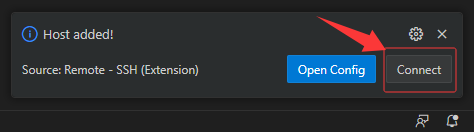
-
在弹出的系统选择窗口中，选择 Linux（虚拟机操作系统）。
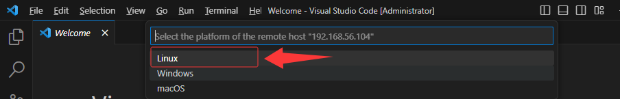
-
点击 Continue 确认连接，在密码输入框中输入虚拟机密码
123456并回车。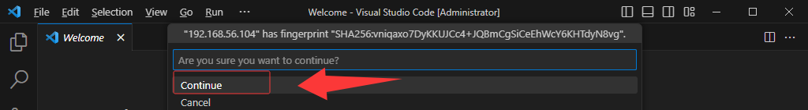
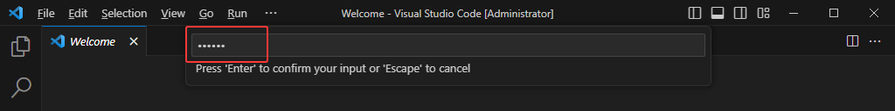
-
连接成功后，VSCode 左下角会显示 SSH: 192.168.56.103。
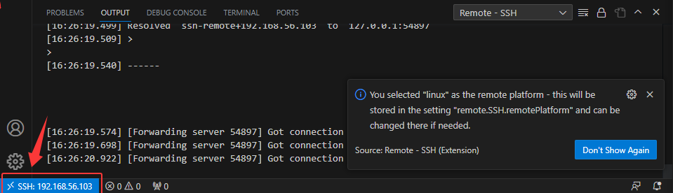
-
选择菜单栏中的Terminal，选择New Terminal。
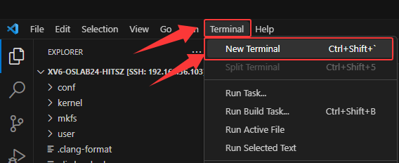
2.4 运行XV6实验¶
-
在New Terminal终端命令行，输入如下命令进入用户主目录
cd ~ -
克隆实验仓库
git clone https://gitee.com/ftutorials/xv6-oslabs-hitsz.git你应该会看到这样的输出：
Cloning into 'xv6-oslabs-hitsz'... done.这代表你已经将xv6的副本下载到自己的工作空间了。
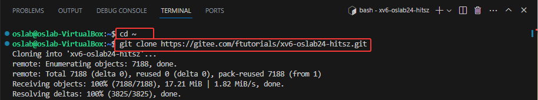
-
点击【Open Folder】，选择
/home/oslab/xv6-oslabs-hitsz；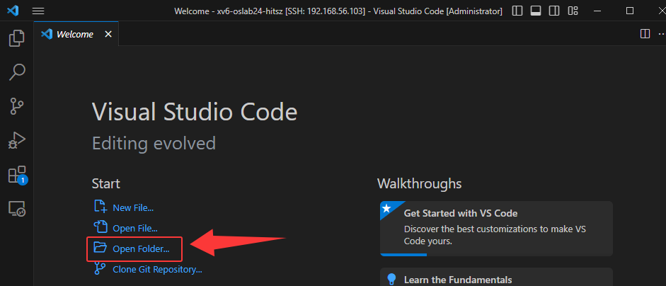
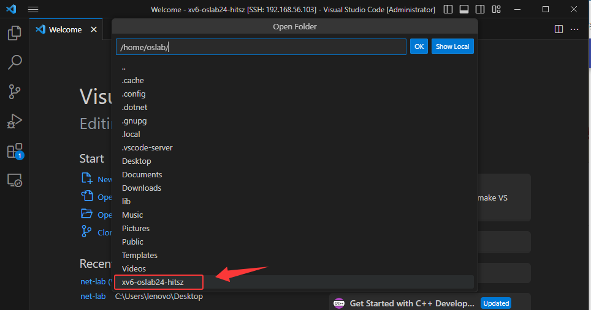
-
再次输入密码
123456，点击【确定】； -
弹出 “信任作者” 提示时，勾选 “Trust the authors of all files in the parent folder 'oslab'”，点击【Yes, I trust the authors】。
-
-
在终端命令行，首先进入 XV6 实验目录。
-
根据实验需求切换至对应分支（不同实验对应不同分支，避免代码冲突），例如：实验一需切换至 util 分支：
cd xv6-oslabs-hitsz git checkout util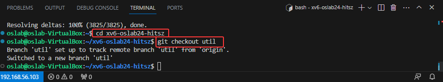
-
输入
make qemu启动XV6:make qemu -
启动成功标志
终端输出最后显示以下内容，即表示 XV6 启动成功：
init: starting sh $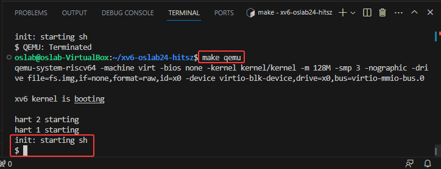
-
退出 XV6 方法
务必按以下步骤退出，避免进程残留：
- 先按
Ctrl + a - 松开后立即按
x
- 先按
3. 文件传输¶
3.1 使用 VSCode 上传文件并开始实验¶
连接到 Ubuntu 虚拟机后，VSCode 资源管理器中会显示虚拟机里的目录结构。
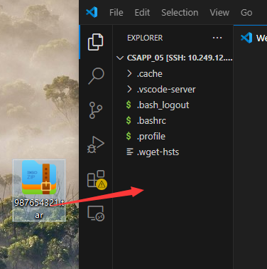
你可以直接把本地的实验包或文件拖到 VSCode 左侧的远程目录中，松开鼠标后就会开始上传。
常见用法：
- 上传实验包：把
学号.tar直接拖到/home/oslab/或你自己的工作目录 - 下载文件到本地：在 VSCode 资源管理器中找到目标文件，右键后选择下载到本地
- 新建文件夹：右键资源管理器中的目录即可创建
- 修改代码：直接在 VSCode 中打开并编辑远程文件